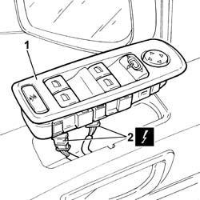
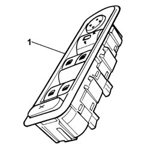

7005M14 SWITCH UNIT CONTROLLING ELECTRIC WINDOWS REAR VIEW MIRRORS AND DOOR LOCK ON DRIVERS SIDE FRONT DOOR R R
- Path
- Procedures > 70 FITTINGS > 7005 PASSENGER COMPARTMENT FRONT SIDE DOORS > 7005M FRONT ELECTRIC WINDOWS > 7005M14 SWITCH UNIT CONTROLLING ELECTRIC WINDOWS REAR VIEW MIRRORS AND DOOR LOCK ON DRIVERS SIDE FRONT DOOR R R
- Kind
- repair procedure (removal / refitting; the operation number is the code)
- Applies to
- all engines; all production periods
- Interactive page
- https://sloeber94.github.io/elrnDB-fUlss/en/#/179007679
Applies to: all engines; all production periods
 Removing
Removing
 Refitting
RefittingOp. 5530B56 BATTERY DRIP TRAY COVER - R.R.
- Disconnect the negative battery terminal.
1. Release the switch panel controlling the electric windows, rear view mirrors and central locking on the driver's door from the retaining clips.
2. Disconnect the electrical connections for the switch panel.

Applies to: all engines; all production periods
1. Remove the switch unit.

Applies to: all engines; all production periods
Refitting
Removing- Connect the electrical connections for the switch panel.
- Position the switch unit for the electric windows, rear view mirrors and central locking and secure it using the special fastening clips.
- Connect the negative battery terminal.
Topics linked from this page (1)
Topics that link to this page (15)
- 5505A42 CONTROL UNIT DIGITAL NETWORK NODE IN DRIVERS SIDE DOOR RR
- 5570T90 FRONT SPEAKER - R R
- 7005A28 FRONT SIDE DOOR LIMITER- REPAIR OR REPLACE
- 7005C08 FRONT DOOR EXTERIOR HANDLE MOUNT (ONE), LH OR RH - R R
- 7005C10 FRONT DOOR OUTER HANDLE - R R WITH DOOR PANEL REMOVED
- 7005C11 FRONT SIDE DOOR OUTSIDE HANDLE R R
- 7005C17 BLOCK FOR FRONT SIDE DOOR LOCK R R WITH DOOR PANEL REMOVED
- 7005D15 FRONT SIDE DOOR DESCENDING WINDOW GLASS R R
- 7005D18 FRONT SIDE DOOR DESCENDING WINDOW GLASS CHANNEL R R
- 7005D26 FRONT SIDE DESCENDING WINDOW GLASS SCRAPER (OUTER) R R
- 7005D30 FRONT SIDE DESCENDING WINDOW GLASS SCRAPER (INNER) R R
- 7005E10 FRONT SIDE DOOR INNER PANEL - R R FOR REPLACEMENT
- 7005E52 WEATHER STRIP ON FRONT SIDE DOOR PILLAR TRIM (ONE) LH OR RH - R R
- 7005M26 ONE FRONT DOOR ELECTRIC WINDOW MECHANISM', LEFT OR RIGHT - R.R .
- 7005M29 FRONT SIDE DOOR ELECTRICALLY OPERATED WINDOW MOTOR R R WITH DOOR PANEL-MOUNT FRAME REMOVED